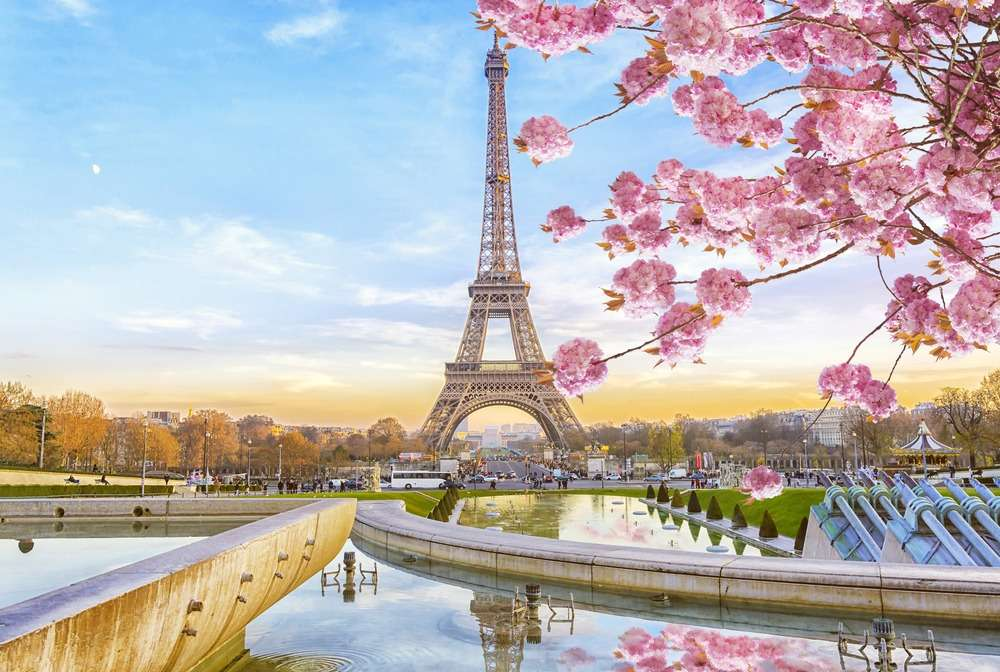

Bali
Ilha da Indonésia conhecida pelas praias, templos, natureza e cultura. É um destino muito procurado para relaxar, conhecer paisagens tropicais e ter contato com a cultura local.

Ilha da Indonésia conhecida pelas praias, templos, natureza e cultura. É um destino muito procurado para relaxar, conhecer paisagens tropicais e ter contato com a cultura local.

Capital da França e uma das cidades mais famosas do mundo. Destaca-se pela Torre Eiffel, Museu do Louvre, arquitetura, gastronomia e pelo ambiente romântico.

Capital da Itália, famosa por sua enorme importância histórica. Possui atrações como o Coliseu, o Vaticano, a Fontana di Trevi e diversas construções da época do Império Romano.

Cidade italiana construída sobre várias ilhas e conhecida por seus canais e gôndolas. Tem uma arquitetura histórica marcante e uma atmosfera bastante diferente de outras cidades europeias.

Região litorânea no sul da Itália conhecida pelas cidades construídas nas encostas, como Amalfi e Positano. É famosa pelas paisagens do Mediterrâneo, praias, estradas costeiras e gastronomia.

País conhecido pelos Alpes, lagos, cidades organizadas e paisagens naturais.
Destinos como Zurique, Genebra, Lucerna e Interlaken são bastante procurados,
além das famosas viagens de trempelas montanhas.